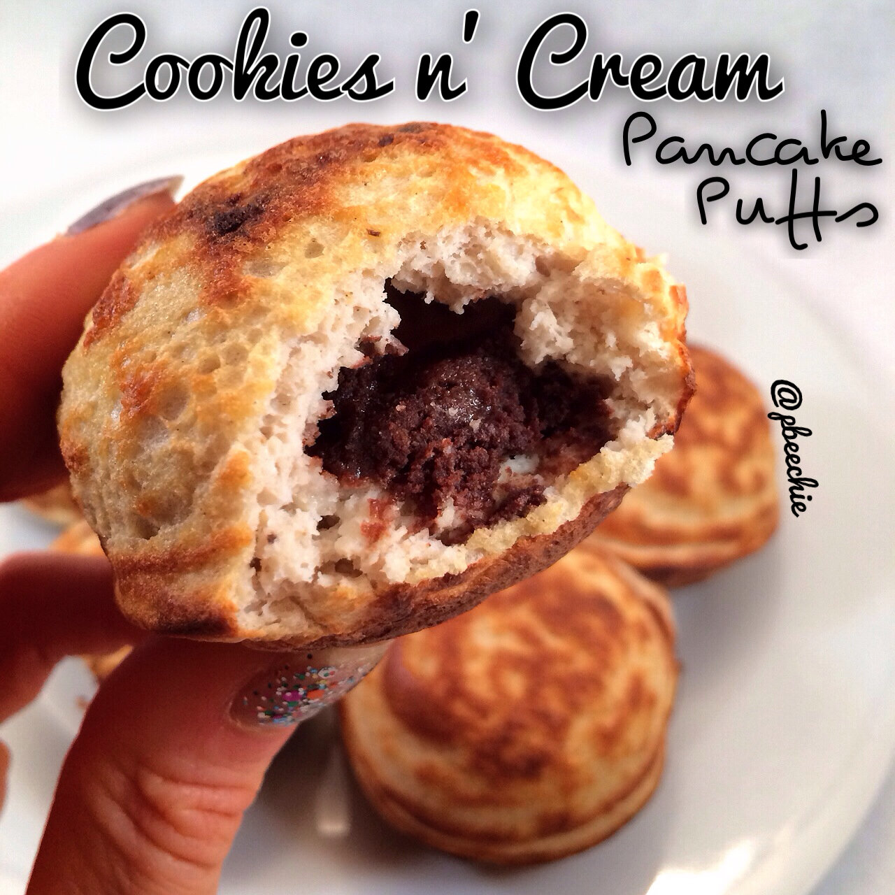

Cookies and Cream Pancake Puffs
I recently bought an Ebelskiver pan off of amazon for $12.70... Because I think it's pretty obvious I have a kitchen appliance/gadget addiction. So I used the Ebelskiver pan to make these. BUTTTT you DON'T need one to make this recipe, you can make them like normal pancakes! But really...it's not as fun that way is it ;p It won't be as "puffy" but it'll still be delicious :) 
- 1/2 cup raw old fashioned oats
- 1/2 scoop cookies and cream whey protein (by cellucor)
- 1/4 cup lowfat cottage cheese
- 2 egg whites
- 1 stevia packet
- 1/2 tsp baking powder
- 1 double chocolate chunk quest bar
Dipping Cream
- 1 TBSP oat flour (ground oats again)
- 2 TBSP plain Greek yogurt
- 1 TBSP vanilla whey protein
- 1/2 TBSP water
- 8-10 vanilla creme stevia drops
Grind the oats into a flour (I use a magic bullet). Then add the whey protein, cottage cheese, egg whites, and stevia packet. Blend again. It should be very thick. This is your batter. Then cut 1 double chocolate chunk quest bar into 8 pieces. Except you only need 7 so just eat the extra piece because you know you want to . Begin to heat an ebelskiver pan with a medium heat. If you don't have one, you can make these like pancakes I promise. Spray the heated ebelskiver pan with a nonstick spray, fill one hole half way with the pancake batter, place a quest bar piece inside, then cover with more pancake batter. Repeat for all 7 positions on the pan. Don't fill the holes too high because the batter rises and gets puffy! Once the bottoms are lightly brown, flip the pancake puff to cook the other side. Once lightly browned on the second side, remove!THENNNN this is optional but definitely "completes" it, I made a cream for dipping. Make the cream dip by mixing the oat flour, plain Greek yogurt, vanilla whey protein, water, and stevia drops. Then serve!
Enjoy :)Nutritional information for 1 pancake puff and portion of dipping cream: 71 calories; 2 g fat, 9 g carbs (3 g fiber), and 8 g protein